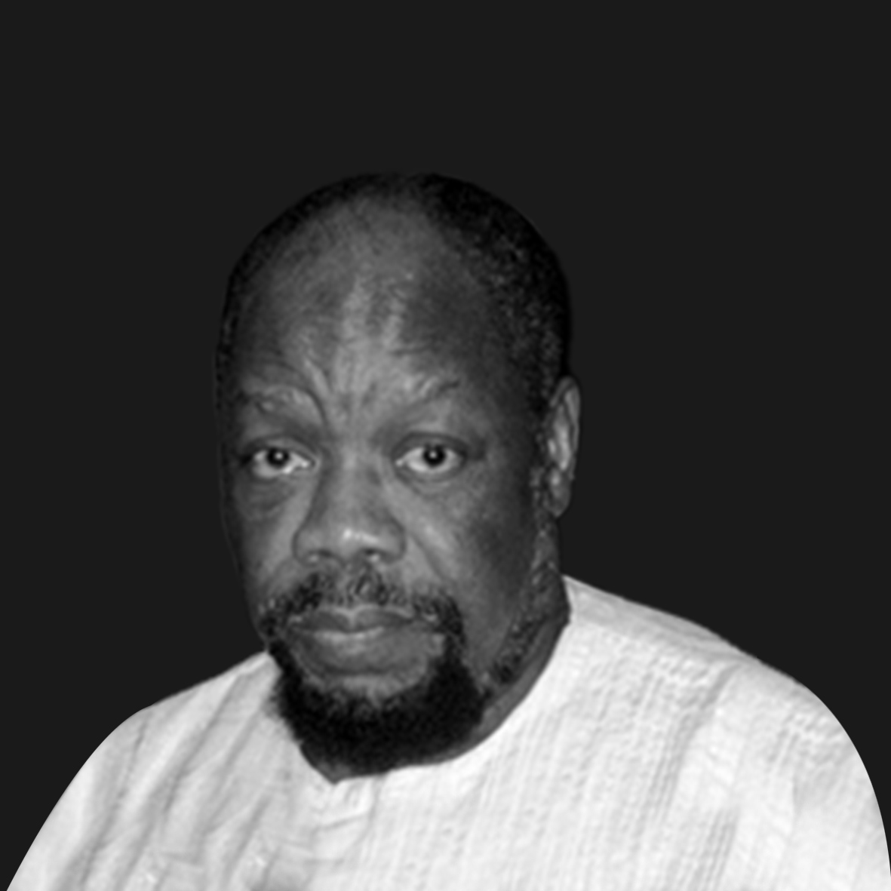

Select your first eleven and share with Nigeria.
-

Dora Nkem Akunyili (14 July 1954 – 7 June 2014) was the Director General of National Agency for Food and Drug Administration and Control (NAFDAC) of Nigeria and Nigerian Minister of Information and Communications from 2008 to 2010.
As Director General of NAFDAC in April 2001, Akunyili established as a top priority the eradication of counterfeit drugs and unsafe food.
The lioness is remembered for being fearless and compassionate.
Today we celebrate her as we celebrate Nigeria.
-

Chief Obafemi Jeremiah Oyeniyi Awolowo, GCFR, was a Nigerian nationalist and statesman who PLAYED a key role in Nigeria's independence movement.
A firm believer in the liberating power of education, Awo gave the western region and indeed the entire nation the gift of educating her future.
On the 9th of May, 1987 at the age of 78 Awo passed on survived by his wife, four children and their spouses, and many grand-children.
We will always be grateful for his life.
-

Benjamin Nnamdi Azikiwe, P.C., usually referred to as Nnamdi Azikiwe or Zik, was Nigeria's last Governor-General of Nigeria from 1960 to 1963 and the first President of Nigeria from 1963 to 1966. He was born in Niger State, formerly known as Zungeru on the 16th of November, 1904.
Azikiwe was actively involved in sports at every stage of his life. He died on the 11th of May, 1996 at the age of 91.
Zik was a leader to all Nigerians.
Today we celebrate him as we celebrate Nigeria.
-

Dr. Ameyo Adadevoh is credited with having curbed a wider spread of the Ebola virus in Nigeria by placing the patient zero, Patrick Sawyer, in quarantine despite pressures from the Liberian Government.
We owe so much to the bravery and sacrifice of Dr. Ameyo Adadevoh thousands of lives to start with.
Some fun wiki-facts about our preciousShe was the grand niece of Nigeria's first President Nnamdi Azikwe.
Her great-grandfather was Herbert Macaulay, one of the most celebrated founders of modern Nigeria.
-

Chinua Achebe born Albert Chinụalụmọgụ Achebe (16 November 1930 – 21 March 2013) was a Nigerian novelist, poet, professor and critic. His first novel Things Fall Apart (1958), often considered his best, is the most widely read book in modern African literature for which he gained worldwide attention.
His later novels include No Longer at Ease (1960), Arrow of God (1964), A Man of the People (1966), and Anthills of the Savannah (1987).
-

Chief Abdul-Ganiyu Fawehinmi, popularly called Gani, was born on 22 April 1938. He was a social critic, seasoned human and civil rights lawyer, politician and a Senior Advocate of Nigeria (SAN)Nigerian author, well respected publisher, philanthropist.
Gani Fawehinmi died as a disappointed man, because of the state of his country at the time of his death; he refused the highest national honour accorded him on his death bed.
Gani reminds us all to look beyond our interest but for the well being of the common man.
Today we celebrate him as we celebrate Nigeria.
-

Fela Anikulapo Kuti was born on the 15th of October, 1938. He was professionally known as Fela Kuti and simply Fela; he was a multi-instrumentalist, musician, composer, pioneer of the Afrobeat music genre, human rights activist, and political rebel.
Fela has been called "superstar, singer, musician, Pan-africanist, polygamist, mystic, legend. He was often hailed as one of Africa's most "challenging and charismatic music performers.
Fela had massive setbacks but he was determined to stay strong. He died on the 2nd of August, 1997 from complications relating to AIDS.
We can say enough about the abami eda.
Today we celebrate him as we celebrate Nigeria.
-

Murtala Rufai Ramat Muhammed was born on the 8th of November, 1938. He became the military ruler(Head of the Federal Military Government) of Nigeria from 1975 until his assassination in 1976.
Muritala initiated a comprehensive review of the Third National Development Plan. Singling out inflation as the greatest danger to the economy, he was determined to reduce government spending on public sector development projects.
Today we celebrate her as we celebrate Nigeria.
-

Chukwuemeka Odumegwu Ojukwu (4 November 1933 – 26 November 2011) was a Nigerian military officer and politician who served as the military governor of the Eastern Region of Nigeria in 1966 and the leader of the breakaway Republic of Biafra from 1967 to 1970.
Ojukwu would remember as the man that defended his people but even more as a man that came to love and accept the oneness of our nation Nigeria.
Today we celebrate him as we celebrate Nigeria.
-

Kenule Beeson "Ken" Saro-Wiwa (10 October 1941 – 10 November 1995) was a environmental activist, writer, television producer, and winner of the Right Livelihood Award and the Goldman Environmental Prize.
Saro-Wiwa was a member of the Ogoni people, an ethnic minority in Nigeria whose homeland, Ogoni land, in the Niger Delta. Saro-Wiwa led a nonviolent campaign against environmental degradation of the land and waters of Ogoni land by the operations of the multinational petroleum industry. He was also an outspoken critic of the Nigerian government.
Ken Saro Wiwa was a sincere agitator who gave all for his people.
Today we celebrate him as we celebrate Nigeria.
-

Olayinka Herbert Samuel Heelas Badmus Macaulay was a Nigerian political leader. One of the first leaders of the Nigerian opposition to British colonial rule, he was also a civil engineer, journalist, and accomplished musician.
He was recognized as a promising civil servant and in 1890 was awarded a government scholarship to study civil engineering in England, where he spent 3 years. Upon his return to Lagos he was appointed surveyor of crown lands for the colony of Lagos, a position he held until 1898, when he resigned the post. Macaulay was one of the first Nigerian nationalists and for most of his life a strong opponent of many colonial policies. He died in on the 7th of May, 1945.
-

Alhaji Sir Abubakar Tafawa Balewa, (December 1912 – January 15, 1966) was a Nigerian politician, and the only prime minister of an independent Nigeria. Nicknamed the Golden Voice of Africa because of his oratory, he stands one of the only three National Heroes of the Nigerian Nation.
They don’t make men and leaders like Balewa again.
Today we celebrate him as we celebrate Nigeria.